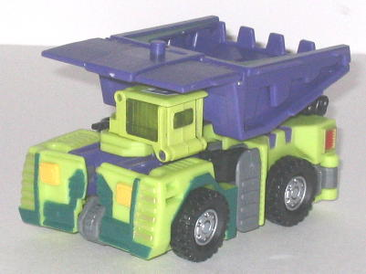
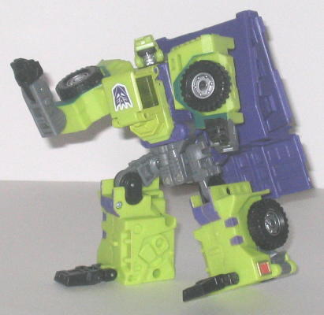
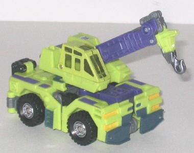
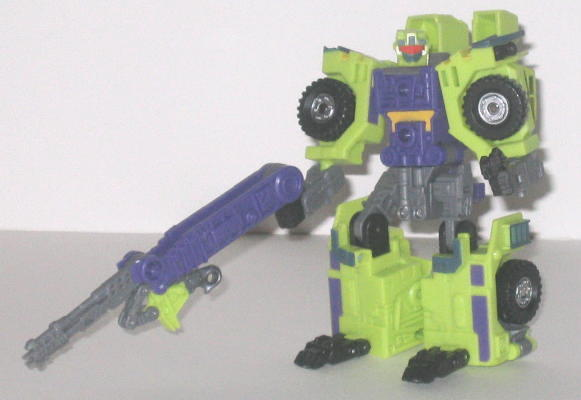

Long
Haul & Hightower (Universe; Target Exclusive)
Long
Haul & Hightower (Universe; Target Exclusive)
Price
: $17 (U.S.)
Overall Rating
(gestalt form included
in score): 7.9
Although originally this
set was originally slated for release in the main Universe line, the non-exclusive
portion of the line was cancelled because of the lack of stores willing
to carry it, so here the set is, more than a year later, as a Target exclusive
at a slightly cheaper price!
Long
Haul


Allegiance
: Decepticon
Size
: Deluxe
Difficulty of Transformation
: Easy
Color Scheme
: Light pasty green,
moderately dark gray, royal purple, black, and some silver, transparent
light green, light yellow, light red, dull metallic bronze, dull gold,
and dark bluish green
Individual Rating
: 8.5
(NOTE: Because this is a repaint, this is
not a full-blown review. This mainly covers any changes made to the mold
and the color scheme, and merely compares it to RiD Heavy Load. For a review
on the mold itself, read the review of RiD Heavy Load
here
.)
...Wow. Long Haul is
an incredibly awesome repaint, even ignoring the fact that he's a big G1
Construction homage with a color scheme fans have been clamoring for ever
since the mold was first released. The light green and purple just go extremely
well together, and the gray and black are nice contrasting colors that
help to mix the scheme up a little bit more than the typical G1 Constructicon
colors of just light green and purple. There are also several new paint
apps added when compared to this mold's previous versions, especially on
the robot upper arms and upper legs, and they all contrast very nicely.
The dark blue-green paint apps also look really nice against the green
and purple as well. At first, I was a bit concerned about Heavy Load's
grinning, friendly mug being used for a Decepticon, but to my surprise,
it works perfectly! Now, instead of a happy, goofy face, the same exact
facial expression looks like a smug sneer on Long Haul. Interesting how
just knowing a character's philosophy can change how you percieve the same
facial expression, no? (The dark "sunglasses" optics also probably help,
too.) One minor complaint is that the Decepticon symbol on Long Haul's
chest is upside down in robot mode, which is... odd, considering this is
the only mode it's readily visible in.
No mold changes have
been made to Universe Long Haul.
Hightower


Allegiance
: Decepticon
Size
: Deluxe
Difficulty of Transformation
: Easy
Color Scheme
: Light pasty green,
royal purple, moderately dark gray, black, and some silver, transparent
light green, light yellow, light red, dark metallic bluish gray, and dark
bluish green
Individual Rating
: 8.7
(NOTE: Because this is a repaint, this is
not a full-blown review. This mainly covers any changes made to the mold
and the color scheme, and merely compares it to RiD Hightower. For a review
on the mold itself, read the review of RiD Hightower
here
.)
Hightower, the only Universe
Construction to not change his name from the mold's previous uses (probably
because the Constructicon name "Hook" wasn't legally available), shares
pretty much the exact same color scheme and placement of said colors as
his pack-mate Long Haul, so pretty much all my comments on Long Haul's
AWESOME paint job apply to Hightower as well. Plus, Hightower has even
MORE new paint apps than Long Haul, which is always a plus. The slight
frown on the face is also pretty fitting for a Decepticon, so no worries
there about the mold's faction-changing for this version.
No mold changes have
been made to Universe Hightower.
Long Haul & Hightower
are two molds with incredibly awesome paint jobs, and are great G1 Constructicon
homages. Their colors are so good, it almost negates the kiddy-looking
alt modes for both of them, and their robot modes are awesome pretty much
regardless of what paint job they get. Not to mention $17 is a good deal
for both of them. Highly recommended, even if you don't intend to get
Bonecrusher
& Scavenger
to form Constructicon Devastator.
No Stats
Review by Beastbot
Back to Transformers:
Universe Index